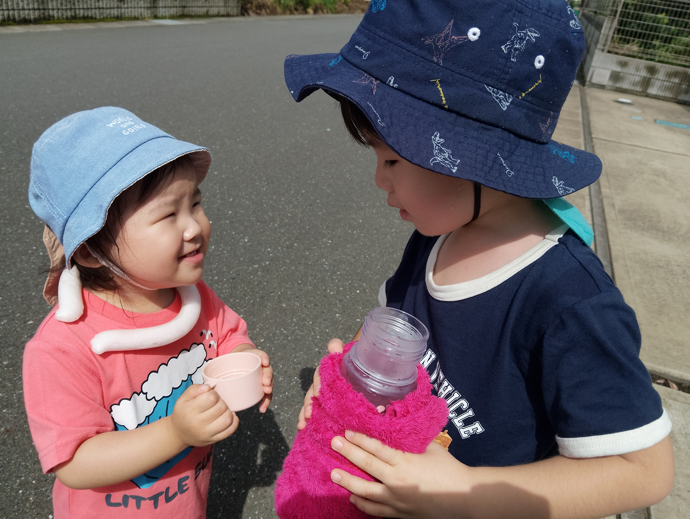
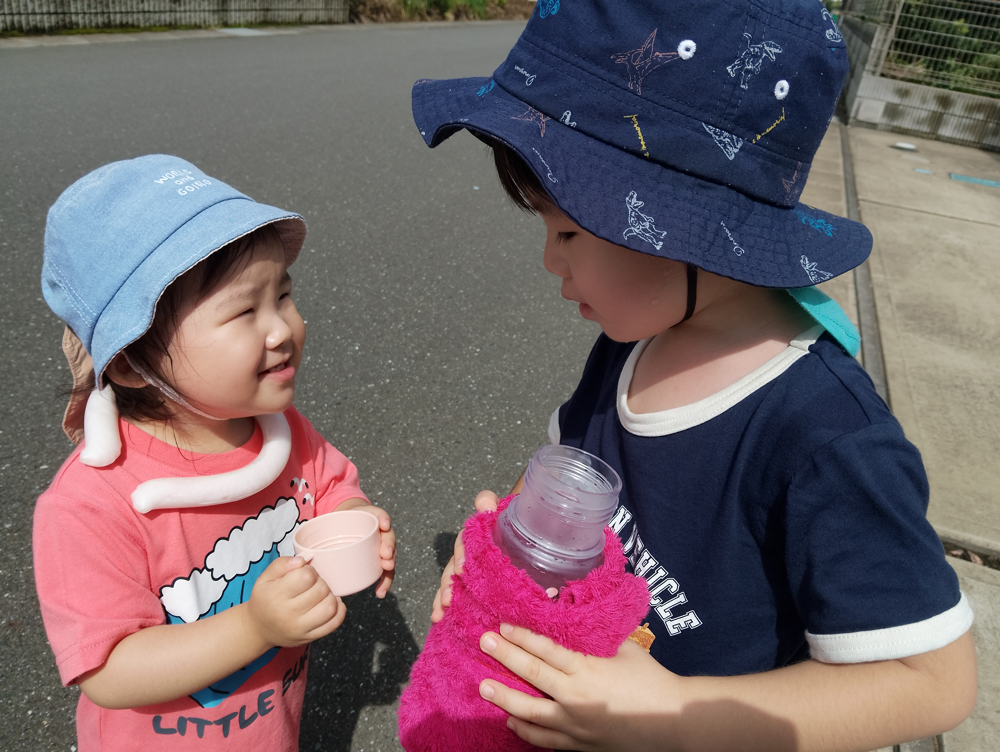
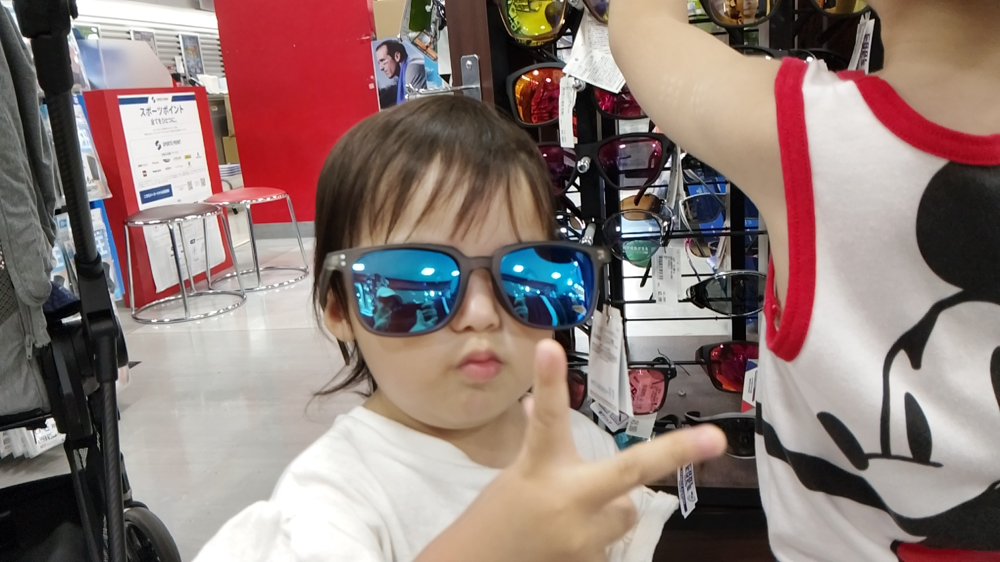
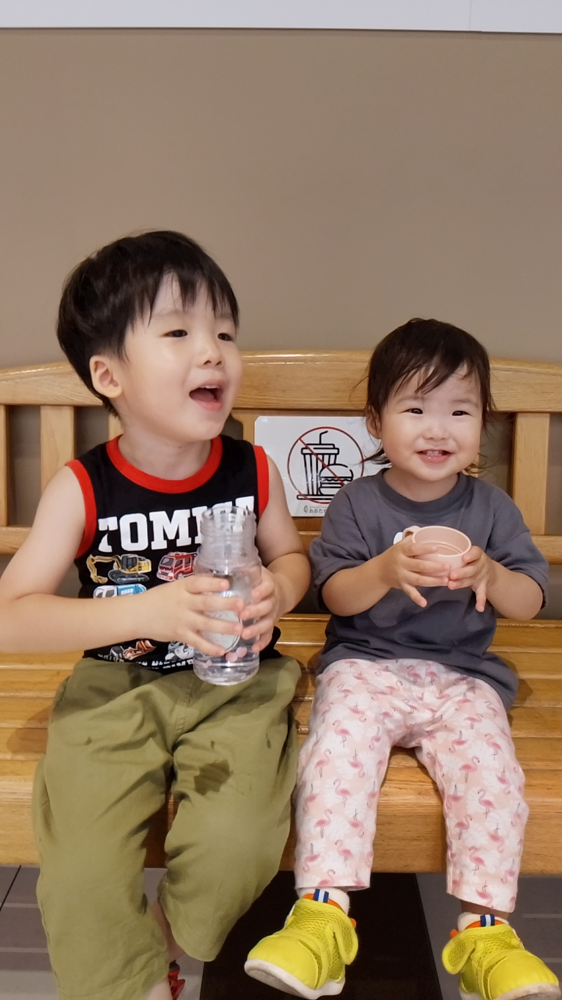
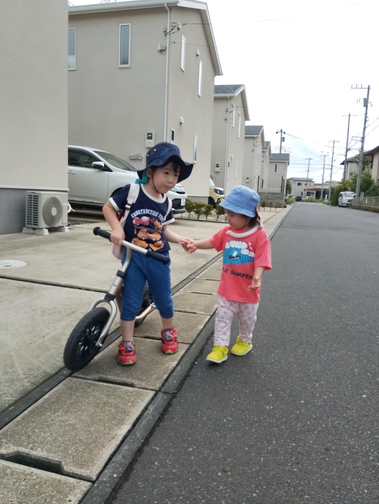

りく（４歳８か月）
- クリスマスプレゼントはマイクラのおもちゃ。ブロック遊びが好きなので、興味の範囲を広げ中
- 幼稚園では人気者（らしい）仲良く遊んでるのはコウくん、サクくん、ミナトくん。担任の先生の名前はユウキ先生
- この前の運動会では、かけっこで1番！
- 以降、足が速いことにハマっており、今はソニック（青いハリネズミ）が大好き
- 「ソニックモード」で家事とゆあちゃんのお世話を手伝ってくれる
- ゆあちゃんにお気に入りのおもちゃを「盗まれる」または破壊されて大泣きしてること多々。ただ、基本は好きなので、寝る時と起きてすぐは、わざわざ隣に行って手を握ってる
- 喧嘩はよくするが、基本は兄として我慢してくれており、おもちゃをとられても「どうぞゆあちゃん」と譲る事も最近増えた。どうしても遊びたい時は、代わりのおもちゃを渡してデコイ作戦
- 正月はれみと駅伝を見ながら、青学がどうの、華の二区がうんたらと、2人で盛り上がってる
- はなくそほじりを最近習得して、成果を自慢してくる。
- 口ぐせは、「おっぱっぺーりー」→意味不明。「おぱんつまんぷぅ！」→意味不明
- 幼稚園のお遊戯会（11月末）出し物は、ダンスと歌。ダンスの『ポップコーン』歌の『雪だるまのチャチャ、ピクニック、ぽかぽかお日様ありがとう』。全体的に全力で挑む。誰よりも大きい声で歌い、普通に踊れるが、（余計な）激しい動きを入れる
- とにかく負けず嫌い。
- たまに考え事してるのか、遠くを見つめている（ハリポタのBGM）
 


ゆあ（２歳２か月）
- 「たぁーく」意味→ありがとう、いただきます、ごちそうさま
- 「あぁーて！」意味→見て！、貸して！
- 「ごめんね」をここ最近はっきり言う
- こまると「どぉしよぉ」、くさいと「くちゃーい」、おかわりは「かぁーりぃ」、話始めに「あのぉ」
- 大概の言葉は理解している模様。「ゆあ太った？」の両親の会話を気にしてるらしく、最近自主的に食事制限ダイエット中。りくと同じ量食べる時もあるので、多分調整してる
- 赤ちゃんのモノマネが流行っており、「あーはぁーん」と言い出したら、赤ちゃんの真似で、かまかまって欲しいの合図
- りくのこと好きすぎて、兄が遊んでるおもちゃを（それまで自分は別のおもちゃで遊んでいたのに、それをほっぽりだして）盗るもしくは破壊する。ほぼ毎回。りくに取り上げられたら、被害者面して甘えてくる。
- おそらくりくのことを舎弟と思っており、機嫌が良いとご飯を食べさせて、よしよししてる。機嫌が悪いと、上げるふりをして、自分で食べて口開けて見せびらかす→りくは本気で拗ねる。移動する時は手を繋ぐが、基本ゆあが前で手を引いてる。2人怒られてる時は、ゆあはりくの陰に隠れて、（おそらく）後ろから背中押してる。見てないとこでりくをどついてる（本人はばれてないと思ってる）
- かわいいねを言いすぎて、「ねぇ！かぁいいーい？」と強要してくる。新しい服も好きで、鏡の前に行って、ファッションチェックする。
- りくのことは「じぃくぅ」と呼べるようになったが、自分のことはまだ呼ばない（ゆあとは言える）
- りくのお遊戯会の練習を見て少し踊れる、お気に入りは『プリンであらどーも！』
- 歯はまだ全部生えてない。人生7周目の貫禄



共通項
- どっちも呼ぶ方を間違える。りく「ママこれやって、あ間違えたパパこれやって」、ゆあ「まぁまぁ！…ぱぁぱぁ！」
- ジブリはもののけ姫以外は大体見て覚えてる。りくはポルコ、カーティスが好きで飛行機をよくブロックで作る。ゆあは、トトロ、千と千尋の「ハク」が好き。あとは、アンパンマン（「あんぱんち」）とミッキー（「ピッピ―」）も好き。
- COWCOWの『あたりまえ体操』を踊れる